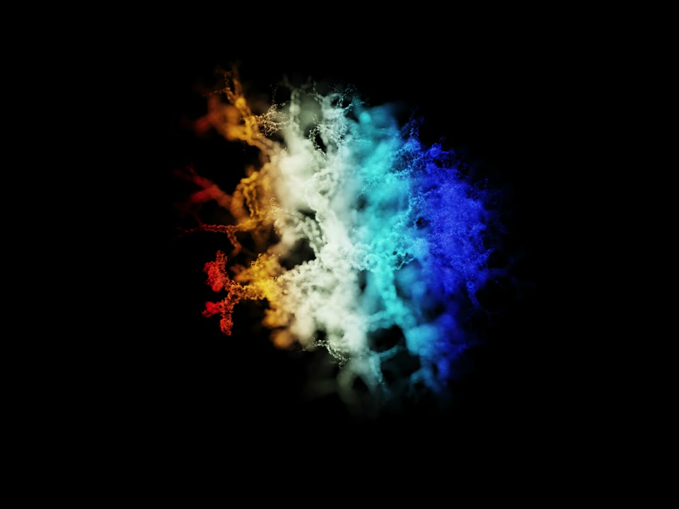
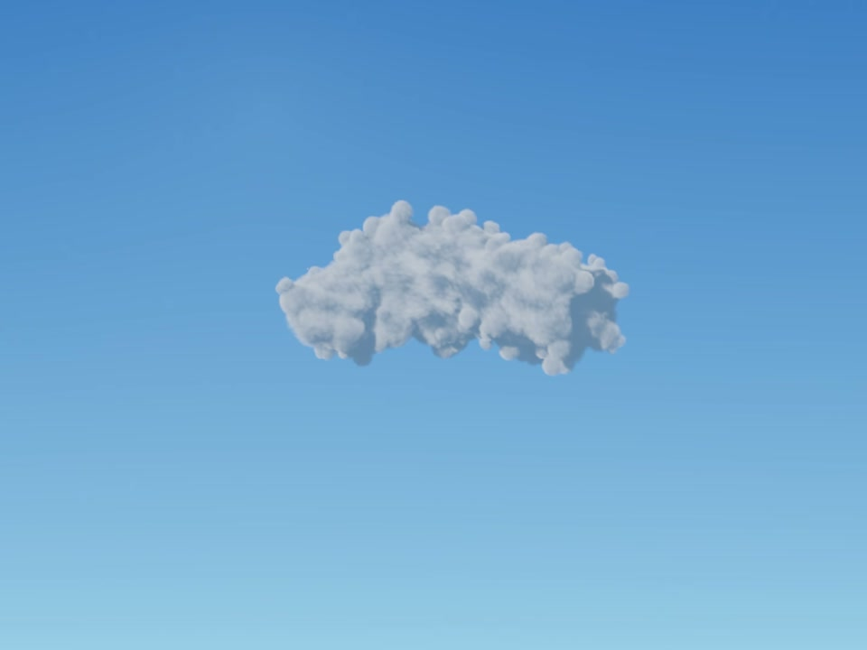
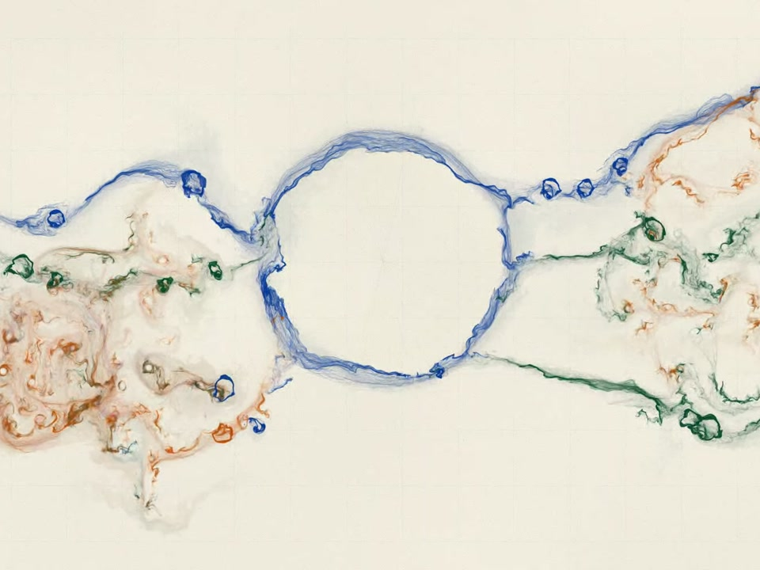
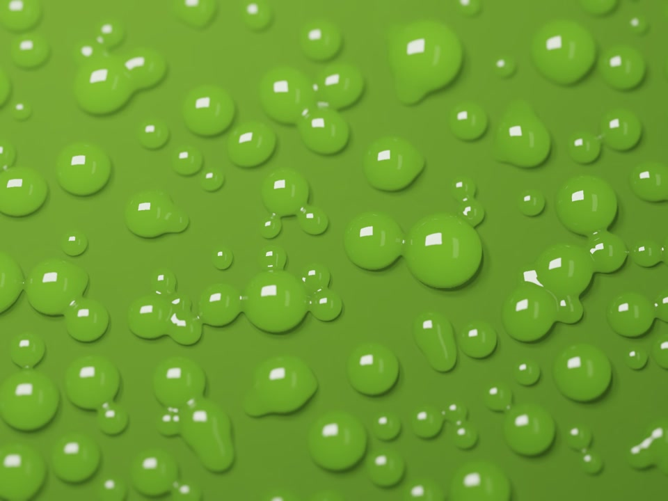
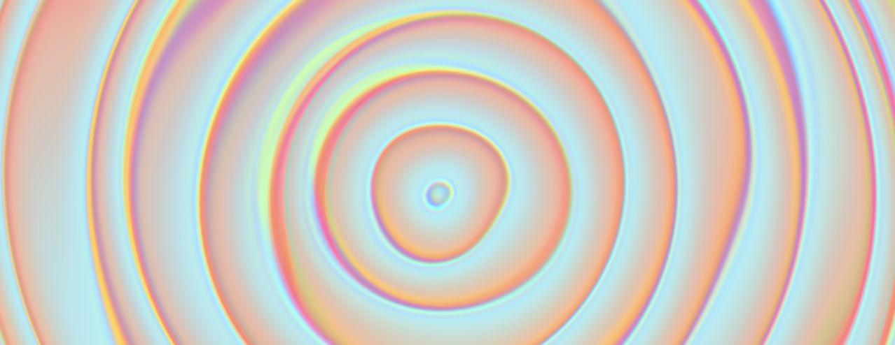
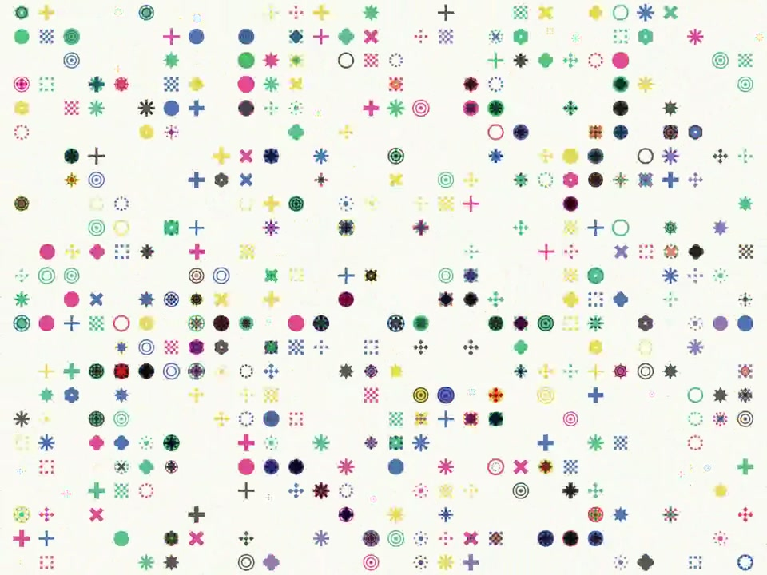

Art, in a living state
Fieldworks
Generative artworks and interactive environments by Brad Necyk.
A surface that answers. A fold in seeing. An unfinished sky. Impossible matter. A river remembering a drawing. A small vocabulary, an expanding field. Six encounters with the living physics of Cyberdelic OS.
These are living, revisable artworks. They are not Bitcoin inscriptions.
-

01 / Living artwork
Lumen
Move among crystalline colonies, strange attractors, and sculpted fractals. Shape the light, lens, and motion.
Enter Lumen -

02 / Living artwork
Aeria
Draw luminous clouds into an open sky. Let them drift, gather, dissolve, and become weather.
Enter Aeria -

03 / Living artwork
Vellum
Release pigment into a living drawing. Fine currents fold into eddies, pool around geometry, and leave diluted traces on warm paper.
Enter Vellum -

04 / Living artwork
Undra
Gather, stretch, grow, and separate luminous water. A small gesture changes the field.
Enter Undra -

05 / Living artwork
Opalia
Pearlescent waves unfold through a continuous field of light. Change the rhythm, or simply stay awhile.
Enter Opalia 
06 / Living artwork
Primitives
Explore a field of translucent geometric marks. Move between simple shapes and fine constellations, or let rows and columns shuffle through the grid.
Enter Primitives
No account. No installation. A recent browser with graphics acceleration.
Part of the Cyberdelic OS universe ↗